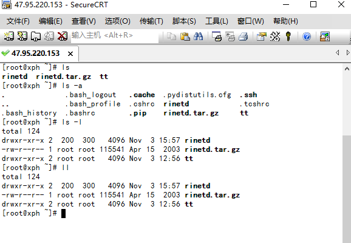
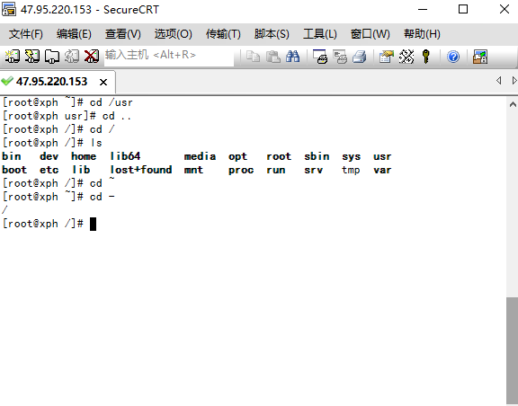
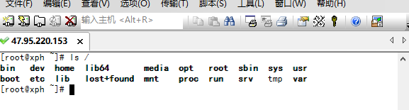
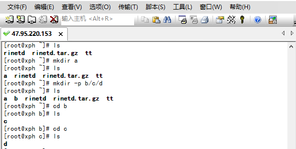
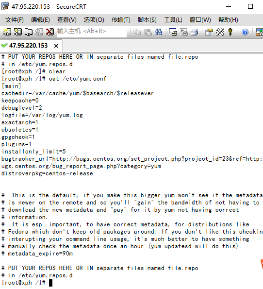
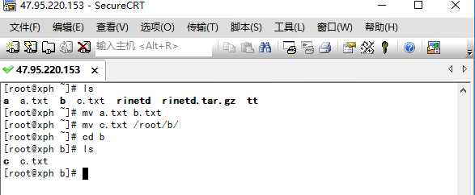
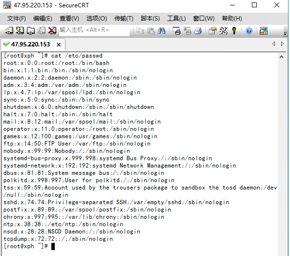
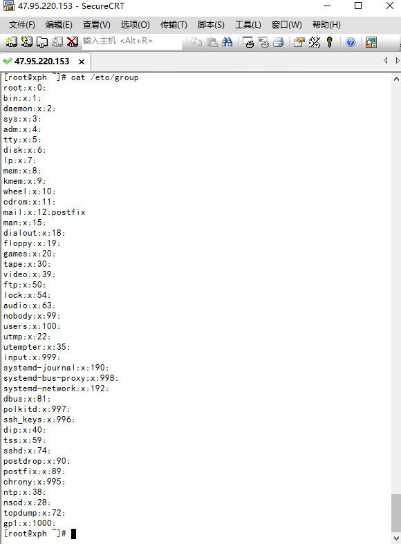

Linux
Linux大纲版本：CentOS6.8
下载路径：
第一节 Linux简介和安装
1.1 基础简介
Linux内核最初只是由芬兰人李纳斯·托瓦兹（Linus Torvalds）在赫尔辛基大学上学时出于个人爱好而编写的。 Linux是一套免费使用和自由传播的类Unix操作系统，是一个基于POSIX和UNIX的多用户、多任务、支持多线程和多CPU的操作系统。 Linux能运行主要的UNIX工具软件、应用程序和网络协议。它支持32位和64位硬件。Linux继承了Unix以网络为核心的设计思想，是一个性能稳定的多用户网络操作系统。
Linux操作系统诞生于1991 年10 月5 日（这是第一次正式向外公布时间）。Linux存在着许多不同的Linux版本，但它们都使用了Linux内核。Linux可安装在各种计算机硬件设备中，比如手机、平板电脑、路由器、视频游戏控制台、台式计算机、大型机和超级计算机
1.2 发行版说明
Linux的发行版说简单点就是将Linux内核与应用软件做一个打包。 目前市面上较知名的发行版有：Ubuntu、RedHat、CentOS、Debian、Fedora、SuSE、OpenSUSE、TurboLinux、BluePoint、RedFlag、Xterm、SlackWare等
1.3 应用领域
今天各种场合都有使用各种Linux发行版，从嵌入式设备到超级计算机，并且在服务器领域确定了地位，通常服务器使用LAMJ（Linux + Apache + MySQL + java）或LNMJ（Linux + Nginx+ MySQL + java）组合。 目前Linux不仅在家庭与企业中使用，并且在政府中也很受欢迎
巴西联邦政府由于支持Linux而世界闻名。 有新闻报道俄罗斯军队自己制造的Linux发布版的，做为G.H.ost项目已经取得成果. 印度的Kerala联邦计划在向全联邦的高中推广使用Linux。 中华人民共和国为取得技术独立，在龙芯过程中排他性地使用Linux。 在西班牙的一些地区开发了自己的Linux发布版，并且在政府与教育领域广泛使用，如Extremadura地区的gnuLinEx和Andalusia地区的Guadalinex。 葡萄牙同样使用自己的Linux发布版Caixa Mágica，用于Magalh?es笔记本电脑和e-escola政府软件。 法国和德国同样开始逐步采用Linux。
1.4 Linux和Windows的区别
| 比较 | Windows | Linux |
|---|---|---|
| 界面 | 界面统一，外壳程序固定所有Windows程序菜单几乎一致，快捷键也几乎相同 | 图形界面风格依发布版不同而不同，可能互不兼容。GNU/Linux的终端机是从UNIX传承下来，基本命令和操作方法也几乎一致。 |
| 驱动程序 | 驱动程序丰富，版本更新频繁。默认安装程序里面一般包含有该版本发布时流行的硬件驱动程序，之后所出的新硬件驱动依赖于硬件厂商提供。对于一些老硬件，如果没有了原配的驱动有时很难支持。另外，有时硬件厂商未提供所需版本的Windows下的驱动，也会比较头痛。 | 由志愿者开发，由Linux核心开发小组发布，很多硬件厂商基于版权考虑并未提供驱动程序，尽管多数无需手动安装，但是涉及安装则相对复杂，使得新用户面对驱动程序问题（是否存在和安装方法）会一筹莫展。但是在开源开发模式下，许多老硬件尽管在Windows下很难支持的也容易找到驱动。HP、Intel、AMD等硬件厂商逐步不同程度支持开源驱动，问题正在得到缓解。 |
| 使用 | 使用比较简单，容易入门。图形化界面对没有计算机背景知识的用户使用十分有利。 | 图形界面使用简单，容易入门。文字界面，需要学习才能掌握。 |
| 学习 | 系统构造复杂、变化频繁，且知识、技能淘汰快，深入学习困难。 | 系统构造简单、稳定，且知识、技能传承性好，深入学习相对容易。 |
| 软件 | 每一种特定功能可能都需要商业软件的支持，需要购买相应的授权。 | 大部分软件都可以自由获取，同样功能的软件选择较少。 |
1.5 Linux的安装
请参考Linux安装文档
1.6 远程登录
默认root用户没有密码，可以修改密码，切换用户，输入用户名：root，点击登录，打开终端命令，输入： password 接着输入新密码，再确认输入即可。 如果需要进行远程登录，需要设置防火墙过滤22端口，当然也可以关闭防火墙
还有远程连接被拒绝，需要检查sshd是否开启 命令： service sshd status 查看sshd的状态 service sshd start 启动sshd service sshd stop 关闭 chkconfig | grep sshd 查看sshd的开启状态 chkconfig sshd on 开机自启 再进行远程连接的时候，需要启动sshd
第二节 Linux常用命令
2.1 文件管理
2.1.1 ls
ls(list)是一个非常有用的命令，用来显示当前目录下的内容。配合参数的使用，能以不同的方式显示目录内容。 格式：ls[参数] [路径或文件名] 常用：在linux中以.开头的文件都是隐藏的文件ls ls -a 显示所有文件或目录（包含隐藏的文件） ls -l 缩写成ll##

2.1.2 ll
ls -l或者 ll 显示一个文件的属性以及文件所属的用户和组。 上述的 drwxr -xr-x 2 root root 4096 Nov 3 12:56 tt的意思： 一个目录对应的所有者具有读写执行的权限，所有者的同组成员具有读和执行的权限，其它用户拥有读和执行的权限,2个连接root用户拥有，群组是root，大小为4096字节，最后修改时间 目录名称tt 一共有7列信息, 分别为: [权限], [连结数], [拥有者], [群组], [大小], [最后修改时间], [名字]

从左至右用1-10这些数字来表示:
1、确定文件类型 当为[ d ]则是目录 当为[ - ]则是文件； 若是[ l ]则表示为链接文档(link file)； 若是[ b ]则表示为装置文件里面的可供储存的接口设备(可随机存取装置)； 若是[ c ]则表示为装置文件里面的串行端口设备，例如键盘、鼠标(一次性读取装置)
2、确定属主（该文件的所有者）拥有该文件的权限 [ r ]代表可读(read)、[ w ]代表可写(write)、[ x ]代表可执行(execute),要注意的是，这三个权限的位置不会改变，如果没有权限，就会出现减号[ - ]而已
3、确定属组（所有者的同组用户）拥有该文件的权限 4、确定其他用户拥有该文件的权限
其中，第1、4、7位表示读权限，如果用"r"字符表示，则有读权限，如果用"-"字符表示，则没有读权限； 第2、5、8位表示写权限，如果用"w"字符表示，则有写权限，如果用"-"字符表示没有写权限；第3、6、9位表示可执行权限，如果用"x"字符表示，则有执行权限，如果用"-"字符表示，则没有执行权限。
5、链接数 6、文件所有者 7、文件所属组 8、文件字节大小 9、文件最后修改日期 10、文件名
2.1.3 cd
cd切换目录 cd /usr 切换到usr目录 cd .. 切换到上一层目录 cd / 切换到系统根目录 cd ~ 切换到用户主目录 cd - 切换到上一个所在目

使用命令：cd / 回到根目录
使用cd /或者 ls /都可以回到根目录


/bin：是Binary的缩写, 这个目录存放着最经常使用的命令。 /boot：存放的是启动Linux时使用的一些核心文件，包括一些连接文件以及镜像文件。 /dev ：是Device(设备)的缩写, 该目录下存放的是Linux的外部设备，在Linux中访问设备的方式和访问文件的方式是相同的。 /etc：用来存放所有的系统管理所需要的配置文件和子目录。 /home：用户的主目录，在Linux中，每个用户都有一个自己的目录，一般该目录名是以用户的账号命名的。 /lib：放着系统最基本的动态连接共享库，其作用类似于Windows里的DLL文件。几乎所有的应用程序都需要用到这些共享库。 /lost+found：这个目录一般情况下是空的，当系统非法关机后，这里就存放了一些文件。 /media：linux系统会自动识别一些设备，例如U盘、光驱等等，当识别后，linux会把识别的设备挂载到这个目录下。 /mnt：系统提供该目录是为了让用户临时挂载别的文件系统的，我们可以将光驱挂载在/mnt/上，然后进入该目录就可以查看光驱里的内容了。 /opt：主机额外安装软件所摆放的目录。比如你安装一个ORACLE数据库则就可以放到这个目录下。默认是空的。 /proc：是一个虚拟的目录，它是系统内存的映射，我们可以通过直接访问这个目录来获取系统信息。 /root：为系统管理员，也称作超级权限者的用户主目录。 /sbin：s就是Super User的意思，这里存放的是系统管理员使用的系统管理程序。 /selinux：是Redhat/CentOS所特有的目录，Selinux是一个安全机制，类似于windows的防火墙，但是这套机制比较复杂，这个目录就是存放selinux相关的文件的。 /srv：存放一些服务启动之后需要提取的数据。 /sys：linux2.6内核的一个很大的变化。该目录下安装了2.6内核中新出现的一个文件系统 sysfs，sysfs文件系统集成了下面3种文件系统的信息：针对进程信息的proc文件系统、针对设备的devfs文件系统以及针对伪终端的devpts文件系统。该文件系统是内核设备树的一个直观反映。当一个内核对象被创建的时候，对应的文件和目录也在内核对象子系统中被创建。 /tmp：是用来存放一些临时文件的。 /usr：用户的很多应用程序和文件都放在这个目录下，类似于windows下的program files目录。 /usr/bin：系统用户使用的应用程序。 /usr/sbin：超级用户使用的比较高级的管理程序和系统守护程序。 /usr/src：内核源代码默认的放置目录。 /var：这个目录中存放着在不断扩充着的东西，我们习惯将那些经常被修改的目录放在这个目录下。包括各种日志文件
2.1.4 pwd
pwd：显示目前的目录
2.1.5 mkdir
mkdir：创建一个新的目录 mkdir a 创建目录a mkdir -p b/c/d 创建所有目录

2.1.6 rmdir
rmdir：删除一个空的目录 rmdir d 删除目录 注意只能删除空目录
2.1.7 vi&vim
vi: 创建文件或编辑文件 vi a.txt 创建文件a.txt并进入文档，按下a或者i或者o进入编辑模式，内容写完之后，按下esc键，然后输入命令： :wq 保存并退出 注意必须要使用: 在Linux下一般使用vi编辑器来编辑文件。vi既可以查看文件也可以编辑文件。 三种模式：命令行、插入、底行模式。切换到命令行模式：按Esc键； 切换到插入模式：按 i 、o、a键; i 在当前位置生前插入 I 在当前行首插入 a 在当前位置后插入 A 在当前行尾插入 o 在当前行之后插入一行 O 在当前行之前插入一行
2.1.8 cat
cat用于显示文件的内容。格式：cat[参数]<文件名> cat /etc/yum.conf 重定向 cat /root/222.txt >123.txt 获取222的内容然后写入到123.txt中,会覆盖原始内容 cat /root/222.txt >>123.txt 同上,但是是追加内容 不是覆盖 cat 111 >123.txt 直接像123输出内容

2.1.9 more和less和tail
more一般用于要显示的内容会超过一个画面长度的情况,按空格键显示下一个画面。 回车显示下一行内容。按 q 键退出查看。 less用法和more类似，不同的是less可以通过PgUp、PgDn键来控制 tail命令是在实际使用过程中使用非常多的一个命令，它的功能是：用于显示文件后几行的内容。 more /etc/yum.conf less /etc/yum.conf tail -10 /etc/yum.conf 显示后10行数据 tail -f catalina.log 动态查看日志(*****) ctrl+c 关闭
2.1.10 mv
mv移动或者重命名 mv a.txt b.txt 将a.txt重命名为b.txt mv c.txt /root/b/ 将c.txt复制到b目录下

2.1.11 rm
rm删除文件,用法：rm [选项]... 文件... rm a.txt 删除a.txt文件,删除需要用户确认 rm -f a.txt 不询问，直接删除rm 删除目录 rm -r a 递归删除不询问递归删除（慎用） rm -rf a 不询问递归删除 rm -rf * 删除所有文件 rm -rf /* 自杀
2.1.12 tar
tar命令位于/bin目录下，它能够将用户所指定的文件或目录打包成一个文件，但不做压缩 一般Linux上常用的压缩方式是选用tar将许多文件打包成一个文件，再以gzip压缩命令压缩成xxx.tar.gz(或称为xxx.tgz)的文件 格式：tar [参数] 文件 常用参数： -c：创建一个新tar文件 -v：显示运行过程的信息 -f：指定文件名 -z：调用gzip压缩命令进行压缩 -t：查看压缩文件的内容 -x：解开tar文件 命令： tar -cvf test1.tar ./* 将当前目录下的所有文件打包为test1.tar tar -cvf test2.tar b.txt 将指定文件打包到test2.tar tar -zcvf test3.tar.gz ./* 将当前目录下的所有文件打包并且压缩到test3.tar.gz tar -xvf test1.tar 解压到当前目录 tar -xvf test3.tar.gz -C aaa 将文件解压到 aaa目录
2.1.13 grep
grep:查找符合条件的字符串。用法: grep [选项]... PATTERN [FILE].. 命令: grep str b.txt 在文件中查找str grep str b.txt –color 高亮显示
2.1.14 管道|
将一个命令的输出结果作为另外一个命令的输入 ps 显示进程 ps -ef显示所有进程 ps -ef | grep ssh 在所有的进程中搜索和ssh相关的
2.2 用户管理
Linux系统是一个多用户多任务的分时操作系统，任何一个要使用系统资源的用户，都必须首先向系统管理员申请一个账号，然后以这个账号的身份进入系统。 用户的账号一方面可以帮助系统管理员对使用系统的用户进行跟踪，并控制他们对系统资源的访问；另一方面也可以帮助用户组织文件，并为用户提供安全性保护。 每个用户账号都拥有一个惟一的用户名和各自的口令。 用户在登录时键入正确的用户名和口令后，就能够进入系统和自己的主目录。 实现用户账号的管理，要完成的工作主要有如下几个方面： 用户账号的添加、删除与修改。 用户口令的管理。 用户组的管理。
2.2.1 useradd
useradd新增用户
格式：useradd [参数] 用户名称
常用参数：
-c comment 指定一段注释性描述。
-d 目录 指定用户主目录，如果此目录不存在，则同时使用-m选项，可以创建主目录。
-g 用户组 指定用户所属的用户组。
-G 用户组，用户组 指定用户所属的附加组。
-s Shell文件 指定用户的登录Shell。
-u 用户号 指定用户的用户号，如果同时有-o选项，则可以重复使用其他用户的标识号。
命令
useradd stu 新增用户stu2.2.2 passwd
passwd给指定的用户设置密码 用户管理的一项重要内容是用户口令的管理。用户账号刚创建时没有口令，但是被系统锁定，无法使用，必须为其指定口令后才可以使用，即使是指定空口令。指定和修改用户口令的Shell命令是passwd。超级用户可以为自己和其他用户指定口令，普通用户只能用它修改自己的口令 格式：passwd [参数] 用户名 常用参数： -l 锁定口令，即禁用账号。 -u 口令解锁。 -d 使账号无口令。 -f 强迫用户下次登录时修改口令。 如果默认用户名，则修改当前用户的口令，比如centOS 默认的root账号没有密码，就可以直接使用passwd修改密码即可。 命令： passwd stu 按下enter键 输入2次密码即可
2.2.3 userdel
userdel删除用户 命令： userdel stu 删除指定用户但是用户在home下面的目录保存 userdel -r stu 删除指定用户并且删除对应的home目录
2.2.4 usermod
usermod修改用户信息 格式：usermod [参数] 常用的参数包括-c, -d, -m, -g, -G, -s, -u以及-o等，这些选项的意义与useradd命令中的选项一样，可以为用户指定新的资源值。 另外，有些系统可以使用选项：-l 新用户名，这个选项指定一个新的账号，即将原来的用户名改为新的用户名。 命令： usermod stu -l stu2 将用户名stu重命名为stu2
2.3 用户组管理
每个用户都有一个用户组，系统可以对一个用户组中的所有用户进行集中管理。不同Linux 系统对用户组的规定有所不同，如Linux下的用户属于与它同名的用户组，这个用户组在创建用户时同时创建。 用户组的管理涉及用户组的添加、删除和修改。组的增加、删除和修改实际上就是对/etc/group文件的更新
2.3.1 groupadd
groupadd增加一个新的用户组 格式：groupadd [参数] 用户组名称 常用参数： -g GID 指定新用户组的组标识号（GID）。 -o 一般与-g选项同时使用，表示新用户组的GID可以与系统已有用户组的GID相同 命令： groupadd gp1 新增用户组gp1 groupadd -g 1111 gp2 新增用户组gp2,并且组标记号为1111
2.3.2 groupdel
groupdel删除一个用户组 格式：groupdel 用户组名称 命令： groupdel gp1 删除用户组gp1
2.3.3 groupmod
groupmod修改用户组信息 格式：groupmod [参数] 用户组名称 常用参数： -g GID 为用户组指定新的组标识号。 -o 与-g选项同时使用，用户组的新GID可以与系统已有用户组的GID相同。 -n 新用户组 将用户组的名字改为新名字 命令： groupmod gp2 -n gp5 让gp2更名为gp5
2.3.4 newgrp
newgrp切换到其他用户组 格式：newgrp 用户组名称 命令： new grp gp5 切换到gp5
2.4 磁盘管理
Linux磁盘管理好坏直接关系到整个系统的性能问题。 Linux磁盘管理常用三个命令为df、du和fdisk。
2.4.1 df
df列出文件系统的整体磁盘使用量 df命令参数功能：检查文件系统的磁盘空间占用情况。可以利用该命令来获取硬盘被占用了多少空间，目前还剩下多少空间等信息。 格式：df [参数] [目录或文件名] 常用参数： -a ：列出所有的文件系统，包括系统特有的 /proc 等文件系统； -k ：以 KBytes 的容量显示各文件系统； -m ：以 MBytes 的容量显示各文件系统； -h ：以人们较易阅读的 GBytes, MBytes, KBytes 等格式自行显示； -H ：以 M=1000K 取代 M=1024K 的进位方式； -T ：显示文件系统类型, 连同该 partition 的 filesystem 名称 (例如 ext3) 也列出； -i ：不用硬盘容量，而以 inode 的数量来显示 命令： df -h 将容量结果以易读的容量格式显示出来 df -aT 将系统内的所有特殊文件格式及名称都列出来

2.4.2 du
du命令也是查看使用空间的，但是与df命令不同的是Linux du命令是对文件和目录磁盘使用的空间的查看 格式：du [参数] 文件或目录名称 常用参数： -a ：列出所有的文件与目录容量，因为默认仅统计目录底下的文件量而已。 -h ：以人们较易读的容量格式 (G/M) 显示； -s ：列出总量而已，而不列出每个各别的目录占用容量； -S ：不包括子目录下的总计，与 -s 有点差别。 -k ：以 KBytes 列出容量显示； -m ：以 MBytes 列出容量显示； 命令： du -a 将文件的容量也列出来 du -sm /* 检查根目录底下每个目录所占用的容量
2.4.3 fdisk
fdisk 是 Linux 的磁盘分区表操作工具 格式：fdisk [参数] 装置名称 常用参数： -l ：输出后面接的装置所有的分区内容。若仅有 fdisk -l 时， 则系统将会把整个系统内能够搜寻到的装置的分区均列出来 命令： fdisk -l 列出所有分区信息
2.5 系统管理
2.5.1 ps
ps 显示进程 命令： ps -ef 显示所有进程 ps -ef | grep ssh 在所有的进程中搜索和ssh相关的
2.5.2 kill
kill 杀掉某个进程,后面跟着进程的id 命令： kill 1234 kill -9 1234强制干掉1234
2.5.3 防火墙
service iptables status 查看防火墙状态 service iptables start 启动防火墙 service iptables stop 关闭防火墙 service iptables restart 重启 chkconfig iptables off 永久关闭防火墙 chkconfig iptables on 永久关闭后重启
2.5.4 关机
shutdown -r now 立刻重启 shutdown -r 10 过10分钟自动重启 shutdown -r 20:35 在时间为20:35时候重启 shutdown -c 取消重启 poweroff 立刻关机 shutdown -h now 立刻关机 shutdown -h 10 10分钟后自动关机
2.5.5 网络
ifconfig 查看网络ip地址 ping ip地址 查看是否可以连接某个ip
2.5.6 查找
find / -name mysql 查询MYSQL
第三节 常用文件
3.1 /etc/passwd
Linux系统中的每个用户都在/etc/passwd文件中有一个对应的记录行，它记录了这个用户的一些基本属性。 这个文件对所有用户都是可读的，下面就是文件的具体内容：

文档格式： 用户名:口令:用户标识号:组标识号:注释性描述:主目录:登录Shell
1）"用户名"是代表用户账号的字符串。 通常长度不超过8个字符，并且由大小写字母和/或数字组成。登录名中不能有冒号(:)，因为冒号在这里是分隔符。 为了兼容起见，登录名中最好不要包含点字符(.)，并且不使用连字符(-)和加号(+)打头。 2）“口令”一些系统中，存放着加密后的用户口令字。 虽然这个字段存放的只是用户口令的加密串，不是明文，但是由于/etc/passwd文件对所有用户都可读，所以这仍是一个安全隐患。因此，现在许多Linux 系统（如SVR4）都使用了shadow技术，把真正的加密后的用户口令字存放到/etc/shadow文件中，而在/etc/passwd文件的口令字段中只存放一个特殊的字符，例如“x”或者“*”。 3）“用户标识号”是一个整数，系统内部用它来标识用户。 一般情况下它与用户名是一一对应的。如果几个用户名对应的用户标识号是一样的，系统内部将把它们视为同一个用户，但是它们可以有不同的口令、不同的主目录以及不同的登录Shell等。 通常用户标识号的取值范围是0～65 535。0是超级用户root的标识号，1～99由系统保留，作为管理账号，普通用户的标识号从100开始。在Linux系统中，这个界限是500。 4）“组标识号”字段记录的是用户所属的用户组。 它对应着/etc/group文件中的一条记录。 5)“注释性描述”字段记录着用户的一些个人情况。 例如用户的真实姓名、电话、地址等，这个字段并没有什么实际的用途。在不同的Linux 系统中，这个字段的格式并没有统一。在许多Linux系统中，这个字段存放的是一段任意的注释性描述文字，用做finger命令的输出。 6)“主目录”，也就是用户的起始工作目录。 它是用户在登录到系统之后所处的目录。在大多数系统中，各用户的主目录都被组织在同一个特定的目录下，而用户主目录的名称就是该用户的登录名。各用户对自己的主目录有读、写、执行（搜索）权限，其他用户对此目录的访问权限则根据具体情况设置。 7)用户登录后，要启动一个进程，负责将用户的操作传给内核，这个进程是用户登录到系统后运行的命令解释器或某个特定的程序，即Shell。 Shell是用户与Linux系统之间的接口。Linux的Shell有许多种，每种都有不同的特点。常用的有sh(Bourne Shell), csh(C Shell), ksh(Korn Shell), tcsh(TENEX/TOPS-20 type C Shell), bash(Bourne Again Shell)等。 系统管理员可以根据系统情况和用户习惯为用户指定某个Shell。如果不指定Shell，那么系统使用sh为默认的登录Shell，即这个字段的值为/bin/sh。 用户的登录Shell也可以指定为某个特定的程序（此程序不是一个命令解释器）。 利用这一特点，我们可以限制用户只能运行指定的应用程序，在该应用程序运行结束后，用户就自动退出了系统。有些Linux 系统要求只有那些在系统中登记了的程序才能出现在这个字段中。 8)系统中有一类用户称为伪用户（psuedo users）。 这些用户在/etc/passwd文件中也占有一条记录，但是不能登录，因为它们的登录Shell为空。它们的存在主要是方便系统管理，满足相应的系统进程对文件属主的要求 伪用户含义： bin 拥有可执行的用户命令文件 sys 拥有系统文件 adm 拥有帐户文件 uucp UUCP使用 lp lp或lpd子系统使用 nobody NFS使用
3.2 /etc/group
将用户分组是Linux 系统中对用户进行管理及控制访问权限的一种手段。 每个用户都属于某个用户组；一个组中可以有多个用户，一个用户也可以属于不同的组。 当一个用户同时是多个组中的成员时，在/etc/passwd文件中记录的是用户所属的主组，也就是登录时所属的默认组，而其他组称为附加组。 用户要访问属于附加组的文件时，必须首先使用newgrp命令使自己成为所要访问的组中的成员。 用户组的所有信息都存放在/etc/group文件中。此文件的格式也类似于/etc/passwd文件，由冒号(:)隔开若干个字段

数据格式： 组名:口令:组标识号:组内用户列表
1、"组名"是用户组的名称，由字母或数字构成。与/etc/passwd中的登录名一样，组名不应重复。 2、"口令"字段存放的是用户组加密后的口令字。一般Linux 系统的用户组都没有口令，即这个字段一般为空，或者是*。 3、"组标识号"与用户标识号类似，也是一个整数，被系统内部用来标识组。 4、"组内用户列表"是属于这个组的所有用户的列表/b]，不同用户之间用逗号(,)分隔。这个用户组可能是用户的主组，也可能是附加组。